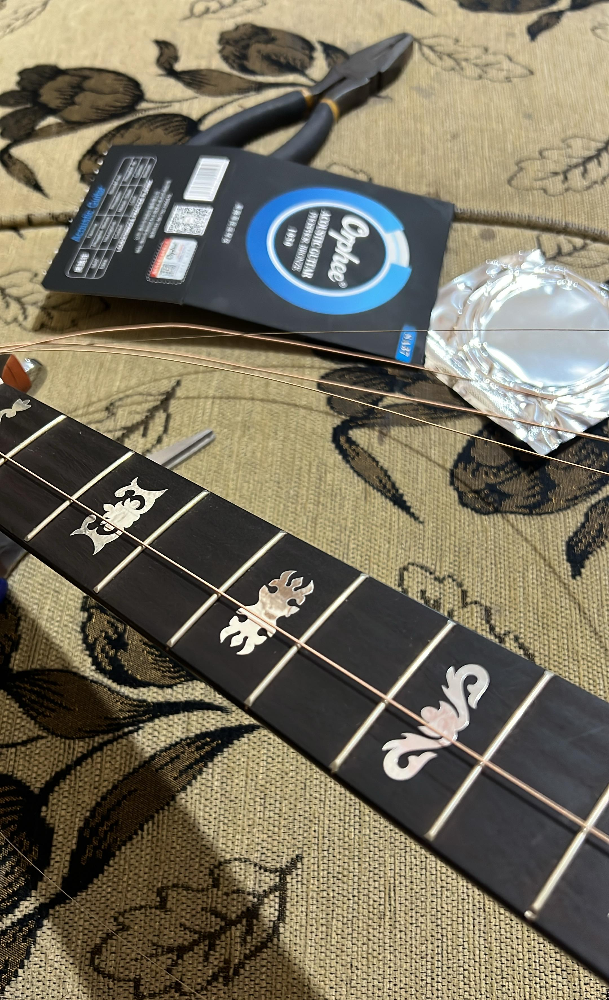
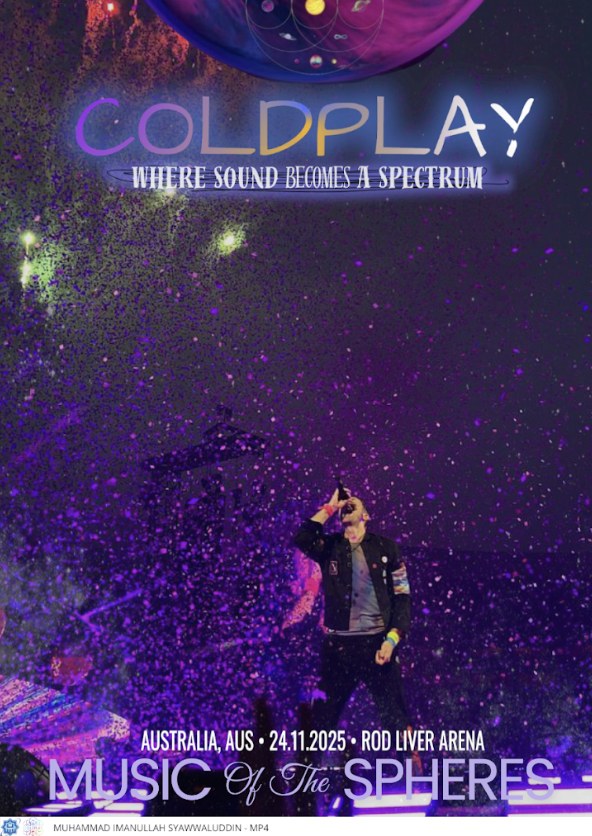

Postingan Pertama Saya
Ditulis pada 26 Agustus 2025
Halo! Ini adalah blog pribadi saya. Di sini saya akan berbagi cerita tentang kehidupan sehari-hari, pengalaman, dan hal-hal menarik yang saya pelajari.
Berbagi cerita, pengalaman, dan pemikiran
Ditulis pada 26 Agustus 2025
Halo! Ini adalah blog pribadi saya. Di sini saya akan berbagi cerita tentang kehidupan sehari-hari, pengalaman, dan hal-hal menarik yang saya pelajari.
Ditulis pada 25 Agustus 2025
Saya sangat suka bermain gitar ,dan ini gitar saya ketika putus karena terlalu sering memainkannya.
Ditulis pada 20 Agustus 2025
Tugas Membuat Logo ICS
Ditulis pada 19 Agustus 2025
Let Down - Radiohead. Attack On Titan!, 進撃の巨人